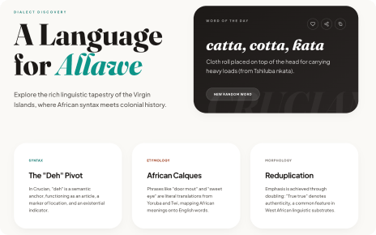

The Web App
The full archive: 216 dictionary terms, 78 proverbs, grammar notes, and the heritage story behind the language. Works offline once installed.

- Searchable dictionary & glossary
- Proverbs, grammar, and heritage timeline
- Installable, works offline, light + dark themes
To install: open the app, then use the Install button in its header (desktop/Android), or Safari's Add to Home Screen (iOS).